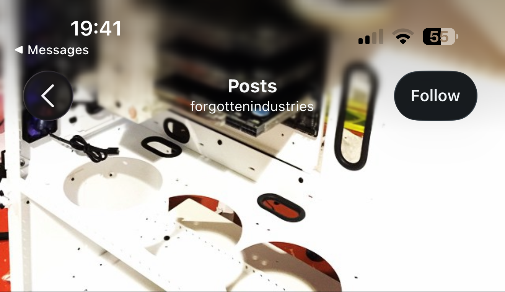

Imported from forgottenindustries.tumblr.com and instagram.com/forgottenindustries.
2016-03-23 / instagram / source / markdown

The elusive 535. Managed to find a pair of these for Redeemer. Caption recovered from local filename; original caption may be longer.
2016-03-19 / instagram / source / markdown

Late post today but here is a shot of the hardware going into Red. Caption recovered from local filename; original caption may be longer.
2014-11-15 / instagram / source / markdown

#pcgaming #4960x #sli #nvidia #watercooled #watercooledpc #liquidcooled #ekwb #asus #pcmasterrace #custompc
2014-11-15 / instagram / source / markdown

Recovered from a Messages screenshot. Original caption is not visible in the recovered image.
2014-10-23 / tumblr / source / markdown

2014-10-21 / tumblr / source / markdown